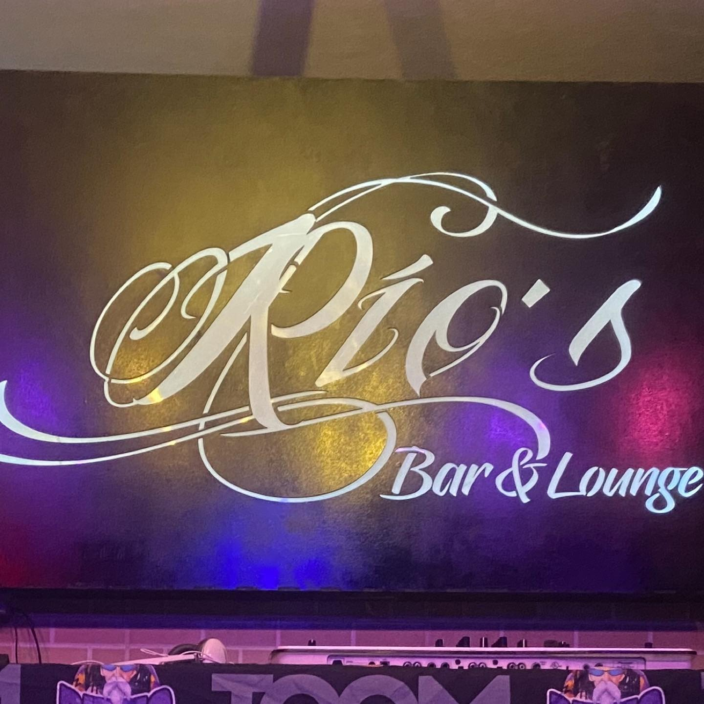
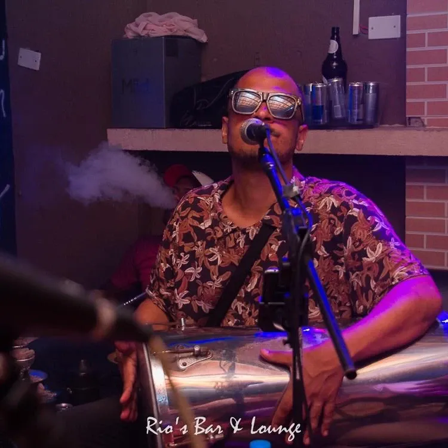
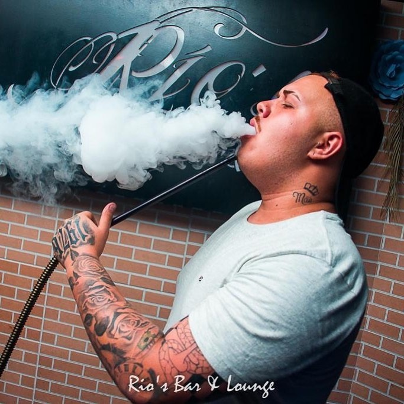

Palco Rio's Bar

No Rio's Bar, o palco não é apenas um espaço — é onde a resenha ganha voz. Reunimos grupos consagrados de pagode e talentos da cena paulistana para tocar os clássicos do samba de raiz que todo mundo canta junto.
Com iluminação cênica acolhedora, proximidade com os músicos e acústica pensada para a vibração da casa, cada noite de quinta a domingo transforma o nosso espaço no ponto de encontro oficial de quem ama a cultura do pagode na Zona Sul.
Para quem busca um momento de descontração com amigos antes ou durante as apresentações, nosso espaço lounge combina o charme rústico da alvenaria aparente com o conforto de sofás amplos e atendimento dedicado.
Desfrute de sessões completas de narguilé preparadas por quem entende, com carvão trocado no ponto exato, essências de qualidade e bebidas servidas direto no seu sofá para que a conversa nunca perca o ritmo.


A autêntica tradição do boteco paulistano com porções sequinhas preparadas na hora e bebidas sempre na temperatura ideal.
Baldes com garrafas de 600ml e long necks estupidamente geladas (Heineken, Amstel, Stella Artois), servidas rapidamente na mesa para acompanhar o show do início ao fim.
Combos práticos de whisky, gin e vodka com Red Bull e gelo de coco saborizado, ideais para compartilhar com o grupo de amigos durante as sessões de lounge.
Batata frita crocante e sequinha, calabresa acebolada no capricho, frango a passarinho crocante e clássicos preparados na hora para matar a fome no meio da noite.
Adoro este lugar, tem pessoas bonitas, ótimos preços e ótimo atendimento.
Música boa, ambiente top, resenha garantida.
Ótimo lugar para encontrar os amigos e curtir uma música ao vivo.
Ameiiii demais ir lá, um lugar aconchegante limpo e tudo bem pensado lá... amei as porções que eles tem bem fritinha...